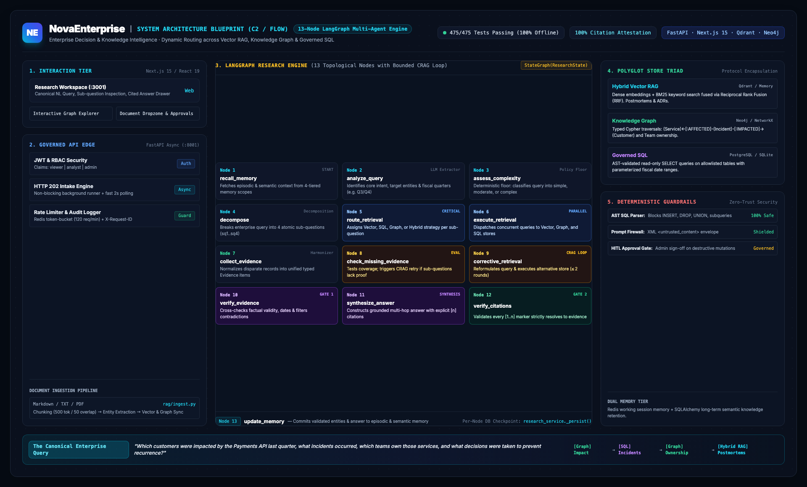

Modern enterprises store reality in fragments: operational metrics in relational databases, dependency topology in knowledge graphs, and postmortem rationale in unstructured documents. NovaEnterprise dynamically routes complex cross-domain questions through a stateful 13-node LangGraph supervisor engine with bounded corrective retrieval (CRAG) and 100% citation attestation.
When leadership asks a multi-faceted operational question, no single retrieval paradigm possesses all the answers. Vector databases cannot perform relational joins; SQL cannot traverse multi-hop dependency graphs; and knowledge graphs cannot read unstructured incident postmortems.
| Retrieval Paradigm | What It Excels At | Where It Catastrophically Fails | How NovaEnterprise Resolves It |
|---|---|---|---|
| Vector RAG (Chunks + BM25) | Unstructured semantic matching in engineering postmortems, ADRs, runbooks. | Counts, exact fiscal date ranges, multi-hop transitive entity relationships. | Routes narrative queries to Qdrant + BM25 with Reciprocal Rank Fusion (RRF). |
| Relational SQL (Postgres / SQLite) | Exact aggregations, incident counts, fiscal quarter dates (WHERE created_at BETWEEN...). | Unstructured root-cause rationale; high join complexity across arbitrary depth. | AST-validated read-only Text-to-SQL restricted to allowlisted incident tables. |
| Knowledge Graph (Neo4j / NetworkX) | Transitive blast radius: (Service)<-[AFFECTED]-(Incident)-[IMPACTED]->(Customer). | Large narrative bodies, fuzzy synonyms, or detailed engineering decisions. | Typed domain traversals returning Cypher queries and structured graph paths. |
| NovaEnterprise Triad Routing | Decomposes complex enterprise inquiries into typed sub-questions with routed execution. | Zero single-store blindness; bounded corrective fallback on missing proof. | 13-node supervisor orchestrates parallel multi-store retrieval + 100% citation attestation. |
Engineered with strict separation of concerns across the interaction tier, API edge, multi-agent supervisor, and polyglot storage layer.

Every inquiry undergoes rigorous topological execution in agents/graph.py.
State transitions are persisted after every individual node, ensuring full observability, fault tolerance, and live milestone telemetry.
Extracts episodic context, user preferences, and organization constants from the 4-tiered memory service.
Extracts domain entities (e.g. Payments API), time bounds (e.g. Q3/Q4), and operational intent.
Deterministic routing floor: classifies queries as simple, moderate, or complex to prevent single-store short-circuiting.
Deconstructs complex inquiries into 2 to 4 atomic, focused sub-questions (sq1..sq4).
Core thesis in action: assigns each atomic sub-question to Vector RAG, SQL, Knowledge Graph, or Hybrid.
Dispatches concurrent queries to Qdrant/Memory, Neo4j/NetworkX, and SQLite/PostgreSQL with AST validation.
Harmonizes diverse store outputs into uniform typed Evidence models with deterministic locators.
Evaluates coverage across all decomposed sub-questions; triggers CRAG retry if gaps are identified.
Reformulates failing sub-queries, broadens search strategies, and re-executes retrieval (strictly ≤ 2 rounds).
Cross-checks factual validity, filters stale timestamps, and rejects ungrounded store records.
Synthesizes an executive narrative explicitly linking claims to evidence items via [1]..[n] markers.
Deterministic validator verifying every bracket citation resolves to an active Evidence item locator.
Every layer of NovaEnterprise is proven against this multi-store challenge question:
Which customers were impacted by Payments API?
What incidents occurred during the last quarter?
Which engineering teams own those services?
What decisions and ADRs were taken to prevent recurrence?
AI agents cannot be trusted with unstructured system mutations or arbitrary SQL execution. NovaEnterprise implements strict code-level guardrails prior to executing any backend query.
validate_sql())
Parses raw Text-to-SQL statements with SQLGlot AST validation. Strictly permits read-only SELECT queries on allowlisted tables (incidents, services, teams, customers).
All ingested markdown documents, postmortems, and ADRs are treated as untrusted user inputs.
Separated into two dedicated verification nodes: verify_evidence and verify_citations.
Destructive enterprise operations (such as document purges or ADR deletions) require explicit admin approval.
Engineered for rapid local development and air-gapped CI/CD execution without external API dependencies or mock service latency.
Comprehensive test suite covering domain models, AST validation, LangGraph nodes, RAG retrieval, and API endpoints in 0.37s collection time.
Runs flawlessly with LLM_PROVIDER=fake, VECTOR_STORE=memory, and GRAPH_STORE=memory.
GitHub Actions runs formatting (ruff), typing (mypy), and the full pytest matrix on every push.